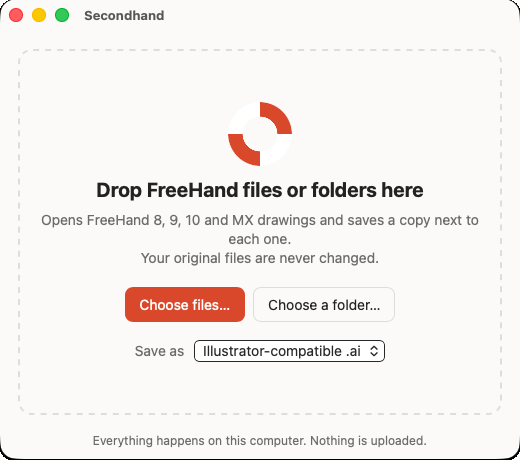
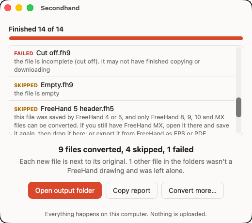
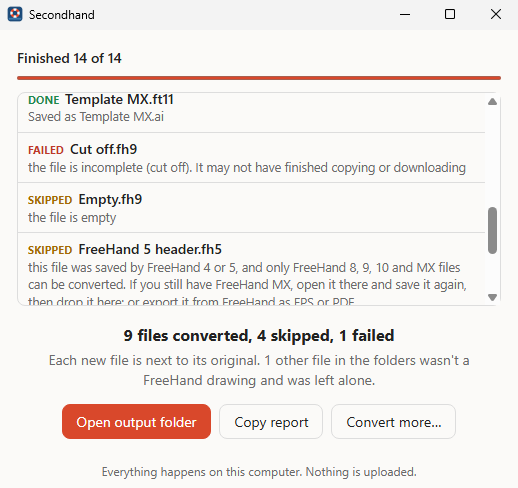

Free for Mac and Windows
Open your old FreeHand drawings again.
Secondhand turns old FreeHand files into .ai files that open in Adobe Illustrator. Drop in one file or a whole folder of them. Your originals stay exactly as they are.

Three steps, about two minutes
Show the steps for
-
1
Download and install
Open the downloaded file and drag Secondhand into your Applications folder.
Open the downloaded file and click through the short installer.
On a Mac, open the downloaded file and drag Secondhand into Applications. On Windows, open it and click through the short installer.
-
2
Open it the first time
Secondhand is made by one person, not a big company, so it doesn't carry a paid Apple or Microsoft certificate. The first time, your computer asks whether you trust it. You only do this once.
- Double-click Secondhand. When the Mac says it wasn't opened, click Done.
- Open System Settings, then Privacy & Security, and scroll down.
- Click Open Anyway and enter your Mac password.
- If a blue box says Windows protected your PC, click More info.
- Then click Run anyway.
Mac: double-click Secondhand and click Done, then go to System Settings → Privacy & Security and click Open Anyway.
Windows: if a blue box appears, click More info, then Run anyway.Security
“Secondhand” was blocked to protect your Mac. Open AnywayWindows protected your PC
Microsoft Defender SmartScreen prevented an unrecognized app from starting.
More info1
Run anyway2Don’t run -
3
Drag your files in
Drop FreeHand files, or whole folders of them, onto the window. Secondhand looks inside every folder, saves a new .ai file next to each drawing, and tells you in plain words if anything couldn’t be converted.
Click Open output folder when it’s done, then open the new files in Illustrator like any other. Files it can’t read are listed with the reason, and nothing else is touched.


Your originals are safe
Secondhand only ever adds new files. It never changes, moves or replaces your FreeHand files, and if a file with the same name already exists it picks a new name instead.
Stays on your computer
Nothing is uploaded. Secondhand works without an internet connection, so client work stays private.
Made for whole archives
Drop a folder with years of work in it. One damaged file won’t stop the rest, and you get a list of what happened to every file.
What comes across, honestly
Most everyday artwork comes through as normal, editable artwork. Some older FreeHand features have no direct match today, so Secondhand simplifies them, and it tells you when it does.
Kept
- Pages, each as its own artboard at the same size
- Layers, with their names and order. Hidden layers stay hidden
- Shapes and lines as editable paths, including groups and paste-inside
- Colours, line widths and dashes
- Gradients (straight and round)
- Text: the words, font, size and colour. Text already turned into outlines comes across exactly
Simplified
- Placed photos and images are left out. Keep the original image files handy
- Pattern, texture and lens fills become a flat colour
- Blends keep their steps, but are no longer live
- Shadows, glows, arrowheads, brushes and envelopes are left off
- Spot and process colours become ordinary screen colours
- Symbols become normal artwork, and guides aren’t kept
Works with files from FreeHand 8, 9, 10 and MX. Files from FreeHand 7 and earlier are recognised and skipped with an explanation; if you still have FreeHand MX somewhere, open and re-save them there first.
Questions
Is it really free?
Yes. Secondhand is free to download and use, with no account, no trial and no ads. It’s also open source, so anyone can look at how it works.
Which FreeHand files does it open?
Drawings and templates from FreeHand 8, 9, 10 and MX (also called FreeHand 11). That includes old Mac files that have no “.fh” ending at all. Secondhand checks what’s inside them.
Are my files uploaded anywhere?
No. Everything happens on your own computer, and Secondhand never connects to the internet. That makes it fine for client work and private archives.
Will it change my original files?
Never. Each new file is saved next to its original. If “Logo.ai” already exists, you get “Logo (1).ai” instead. Nothing is ever replaced.
Why does my computer warn me the first time?
Apple and Microsoft charge developers yearly for the certificate that silences that warning. Secondhand is a free project without one, so you confirm once that you trust it (see step 2 above). After that it opens like any other app.
Do I need Adobe Illustrator?
Only to edit the .ai files in Illustrator. Secondhand can also save PDF files, which open in Preview, Acrobat, Affinity Designer and Inkscape, or SVG files for the web. Pick one under “Save as” in the window.
Something didn’t come out right. What can I do?
Click Copy report in Secondhand and paste it into a message on the project’s feedback page. Please don’t attach client files unless you’re allowed to share them.
Who made this?
Secondhand is made by Elias Witt at Birbol, for designers whose best work is stuck in files nothing opens anymore.
All downloads
Secondhand doesn’t run on phones or tablets. Open this page on your Mac or PC.
Technical details
The .ai file. Secondhand writes a “PDF-compatible” .ai: a PDF 1.7 file with one page per artboard and each FreeHand layer as a PDF optional-content layer (hidden layers start hidden). Illustrator opens these by reading the PDF part, so the artwork arrives as editable paths. The PDF option writes the same file with a .pdf name; SVG writes one file per page.
Signing. The Mac app is a universal binary (arm64 + x86_64) with an ad-hoc signature, not notarised; the Windows builds are unsigned. That’s why the first-launch confirmation is needed.
Under the hood. Secondhand is a Tauri 2 app in Rust. FreeHand files are read by the VectorCraft engine’s FreeHand importer (MIT OR Apache-2.0). There is also a command-line version, including a Linux build, for scripted batches: secondhand-cli [--format ai|pdf|svg] [--json report.json] PATH… (Linux download).
Every release file, checksums and release notes are on the release page. Source code, build instructions and licences are in the repository. Secondhand is MIT OR Apache-2.0; this site uses the Fraunces and Inter typefaces (SIL Open Font License).